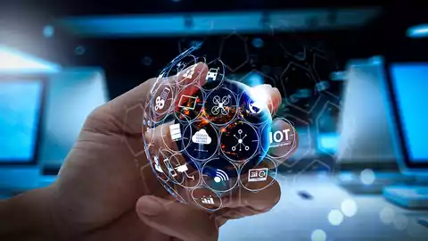
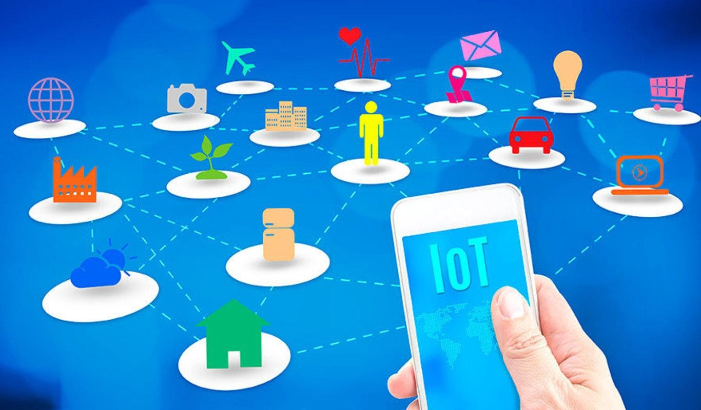

En 2021, había más de 10.000 millones de dispositivos de IoT en el mundo, y para 2025, IDC espera que la generación de datos globales supere los 73 zettabytes –lo cual equivale a 73 billones de gigabytes–. Aunque en realidad no podemos cuantificar los datos digitales en términos físicos, podemos decir que si todos esos datos se convirtieran a discos flexibles de la década de 1990 –y se colocaran uno junto a otro–, llegarían 5000 veces de ida y vuelta a la luna. En solo unas décadas, los datos de IoT han crecido exponencialmente, y es probable que eso continúe. Entonces, ¿qué desencadenó este auge de Internet de las cosas? Para que IoT evolucionara, un conjunto específico de tecnologías debía unirse y avanzar al mismo tiempo.
Conectividad:
evolucionando desde inicios humildes basados en módem, la conectividad actual de Internet y la nube es ahora lo suficientemente rápida y sólida como para enviar y recibir enormes volúmenes de datos y dar soporte al crecimiento exponencial de IoT.
Tecnología de Sensores:
con el constante aumento en la demanda de innovación de sensores de IoT, el mercado pasó de unos pocos y costosos proveedores de nicho a ser una industria de fabricación de sensores altamente globalizada y competitiva en los precios. Desde 2004, el promedio de precio de los sensores de IoT cayó más de un 70%, acompañado por una mejora de la funcionalidad y la diversidad impulsada por un aumento de la demanda de estos productos.
habrá dos veces más datos creados en los próximos cinco años, en comparación con datos generados desde el inicio del almacenamiento digital. Para usar y aprovechar todos esos datos, las empresas modernas exigen cantidades cada vez mayores de memoria y potencia de procesamiento. La carrera para lograrlo ha sido rápida y competitiva y ha impulsado la creciente relevancia y aplicabilidad de la IoT.
Tecnología de Big Data:
desde la década de 1980, los datos del mundo, así como la tecnología informática necesaria para almacenarlos, han crecido exponencialmente. Los avances en bases de datos y herramientas de análisis han permitido procesar y analizar en tiempo real volúmenes masivos de datos generados a partir de dispositivos de IoT, vehículos inteligentes, y equipamiento. Esta velocidad y capacidad son esenciales para internet de las cosas.
IA y machine learning:
estas tecnologías brindan la capacidad no solo de gestionar y procesar grandes cantidades de datos de IoT, sino de analizar y aprender de ellos. Big Data es el alimento favorito de la inteligencia artificial y el machine learning. Cuanto más grandes y diversos sean los data sets, más sólida y precisa será la información estratégica e inteligencia que pueden brindar las analíticas avanzadas potenciadas por IA. El auge de los dispositivos de IoT ha crecido mucho, junto con el avance de la inteligencia artificial, y su apetito por los datos que ellos brindan.
Computación en la nube:
así como la conectividad fue esencial en el desarrollo de internet de las cosas, el auge de la computación en nube también ha estado estrechamente ligado a su evolución. Con la capacidad de entregar potencia de procesamiento y almacenamiento de alto volumen a pedido, los servicios de IoT en la nube allanaron el camino para que los dispositivos de IoT recopilaran y transmitieran data sets cada vez más grandes y complejos.
